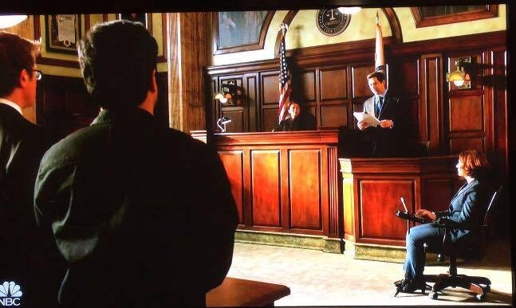

Nina Dudziak has appeared in the role of "stenographer" in the following TV shows:
- Chicago Justice (NBC)
- Chicago Med (NBC)
- Chicago Fire (NBC)
- Suits (USA Network)
- South Side (Comedy Central)
- Redline (CBS)
- Proven Innocent (Fox)

Chicago Justice: Season 1, Episode 12
Suits: Season 7, Episode 16
Chicago Fire: Season 6, Episode 23
Redline: Season 1, Episode 7
South Side: Season 1, Episode 5
Chicago Med: Season 3, Episode 1
Nina has also appeared in various roles in the following TV shows, movies, and commercials:
- Chicago P.D.
- The Chi
- Uber commercial
- Captive State
- How It Ends
- Canal Street
- Widows
- Electric Dreams
- Easy
- The Pages
- Soundtrack